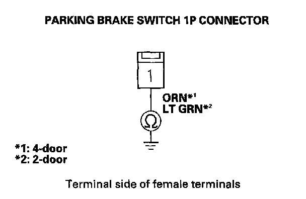

Brake System Indicator Does Not Go Off, and No DTCs Are Stored
Brake system indicator does not go off, and no DTCs are stored1. Release the parking brake.
2. Turn the ignition switch ON (II).
3. Check the brake system indicator for several seconds when the ignition switch is turned ON (II).
Does the indicator come on then go off?
YES - Intermittent failure, the system is OK at this time. Check for loose terminals between the gauge control module (tach) 36P connector and the VSA modulator-control unit 37P connector. Refer to intermittent failures troubleshooting.
NO - Go to step 4.
4. Check the BRAKE INDICATOR in the VSA DATA LIST with the HDS.
Does it indicate OFF?
YES - Go to step 5.
NO - Check for loose terminals in the VSA modulator-control unit 37P connector. If necessary, substitute a known-good VSA modulator-control unit, and retest.
5. Turn the ignition switch OFF.
6. Disconnect the parking brake switch 1P connector.
7. Turn the ignition switch ON (II).
Does the brake system indicator go off?
YES - Replace the parking brake switch.
NO - Go to step 8.
8. Turn the ignition switch OFF.
9. Disconnect the gauge control module (tach) 36P connector.
10. Check for continuity between parking brake switch 1P connector terminal No. 1 and body ground.

Is there continuity?
YES - Repair short to body ground in the wire between the gauge control module (tach) and the parking brake switch.
NO - Check for loose terminals in the gauge control module (tach) 36P connector. If necessary, substitute a known-good gauge control module (tach), then go to step 1 and recheck. If it is OK, replace the original gauge control module (tach).